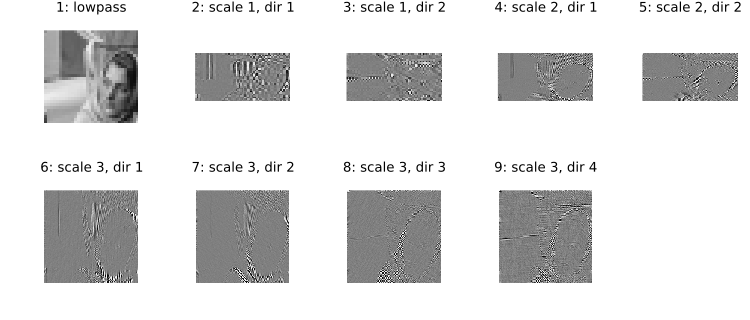

Choose a transform and find its subbands
Contourlets.jl has four transforms. Each splits an image by scale and each scale by orientation; every output array, a subband, holds one scale and one range of orientations. They differ in redundancy (coefficients per pixel) and in whether they commute with circular shifts, that is, whether shifting the image circularly shifts every subband by the same amount:
CT, the contourlet transform: about 4/3 coefficients per pixel, not shift invariant. Use it for compression, sparse approximation, and as a sparsifying transform in iterative reconstruction.NSCT, the nonsubsampled contourlet transform: shift invariant, one image-sized array per subband. Use it for denoising and feature extraction.TICT, the translation-invariant contourlet transform: shift invariant, the highest redundancy.STICT, the semi-translation-invariant contourlet transform: only its pyramid is shift invariant, at a redundancy of1 + 4 scales.
The Theory page compares their construction, redundancy and shift invariance.
Build a transform
A transform is a value built from keywords. scales is the number of pyramid levels; direction_levels gives, for each scale from the coarsest to the finest, the depth l of its directional filter bank, which splits that scale into 2^l directions. With scales alone, the depths follow the parabolic scaling rule of parabolic_levels:
using Contourlets
t = CT(scales = 3)CT(scales = 3, direction_levels = [1, 1, 2])NSCT(scales = 3, direction_levels = [2, 3, 3])NSCT(scales = 3, direction_levels = [2, 3, 3])The NSCT and the TICT take images of any size. The CT and the STICT need sizes that their directional filter banks can downsample; a size that does not fit throws an error that names the nearest one that does (the CT and STICT docstrings give the rule). The transforms run at the precision of the data: Float32 images give Float32 coefficients, and complex images complex ones.
Analyze and synthesize
analyze computes the coefficients, and synthesize inverts it up to rounding error:
using TestImages, ImageCore
img = Float64.(Gray.(testimage("barbara")))[1:256, 300:555]
c = analyze(t, img)
maximum(abs, synthesize(t, c) .- img)5.551115123125783e-16The transforms are frames, not orthogonal bases: synthesize is the inverse of analyze, not its adjoint.
Find a subband
The coefficients of the NSCT and the TICT are one array of size (size(img)..., n) with subband i in c[:, :, i]. Those of the CT and the STICT, whose subbands differ in size, are a SubbandVector: a vector that broadcasts and reduces like any other (c .* 2, maximum(abs, c)) and holds all subbands in one storage vector. For all four, subband(t, c, i) returns subband i as a matrix view, and subband_layout(t, size(img)) names each i:
layout = subband_layout(t, size(img))
layout[1:4]4-element Vector{@NamedTuple{scale::Int64, direction::Int64}}:
(scale = 0, direction = 0)
(scale = 1, direction = 1)
(scale = 1, direction = 2)
(scale = 2, direction = 1)Subband 1 is the lowpass image. For the CT and the NSCT, the directional subbands follow as (scale = j, direction = k), from the coarsest scale j = 1 to the finest; the TICT and the STICT name them (level = j, channel = ch, direction = k), with four channels per level. To find a subband by name:
i = findfirst(==((scale = 3, direction = 2)), layout)
size(subband(t, c, i))(128, 128)The figure shows every subband of the CT above with its index. Finer scales have smaller subbands, and each directional subband responds to edges of one orientation (each panel uses its own gray scale, clipped at the 99th percentile of its magnitudes):
using Plots, Statistics
Plots.default(show = false)
panels = map(enumerate(layout)) do (i, s)
sb = subband(t, c, i)
name = s.scale == 0 ? "$i: lowpass" : "$i: scale $(s.scale), dir $(s.direction)"
cl = s.scale == 0 ? extrema(sb) : (-1, 1) .* quantile(abs.(vec(sb)), 0.99)
heatmap(sb; title = name, titlefontsize = 9, color = :grays, clims = cl,
aspect_ratio = :equal, axis = false, grid = false, colorbar = false, yflip = true)
end
cols = 5
plot(panels...; layout = (cld(length(panels), cols), cols),
size = (150 * cols, 160 * cld(length(panels), cols)))